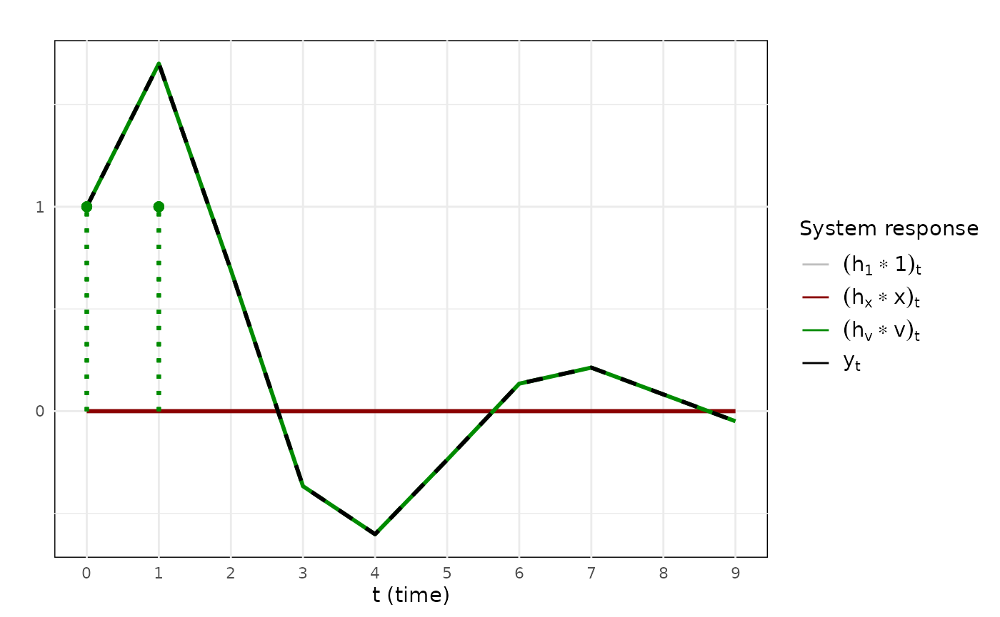
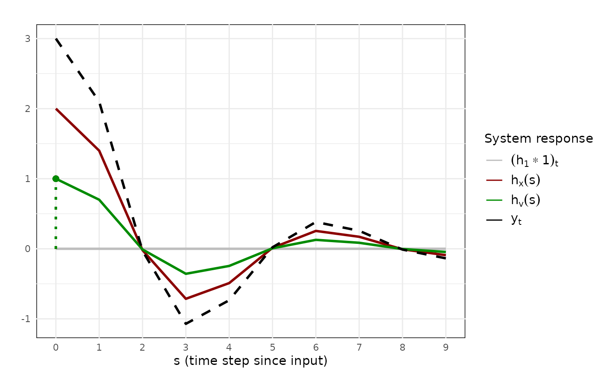
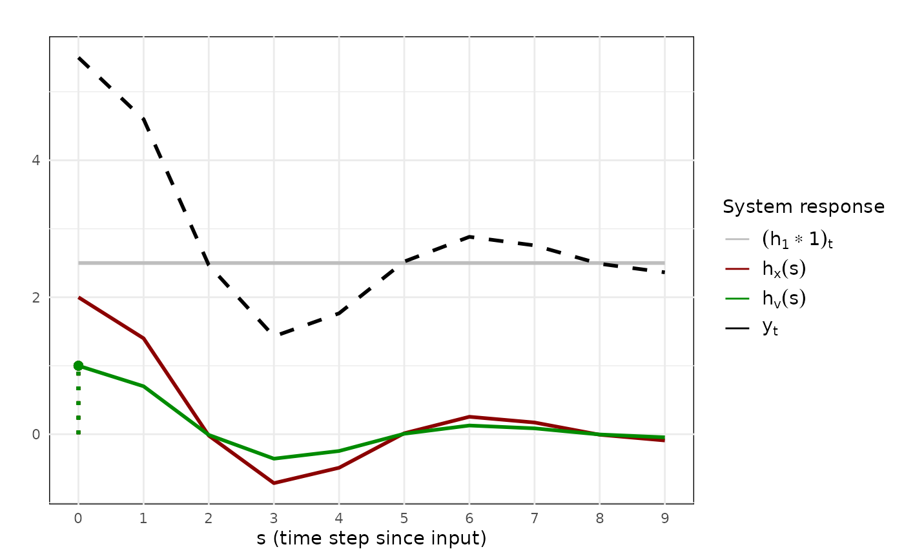
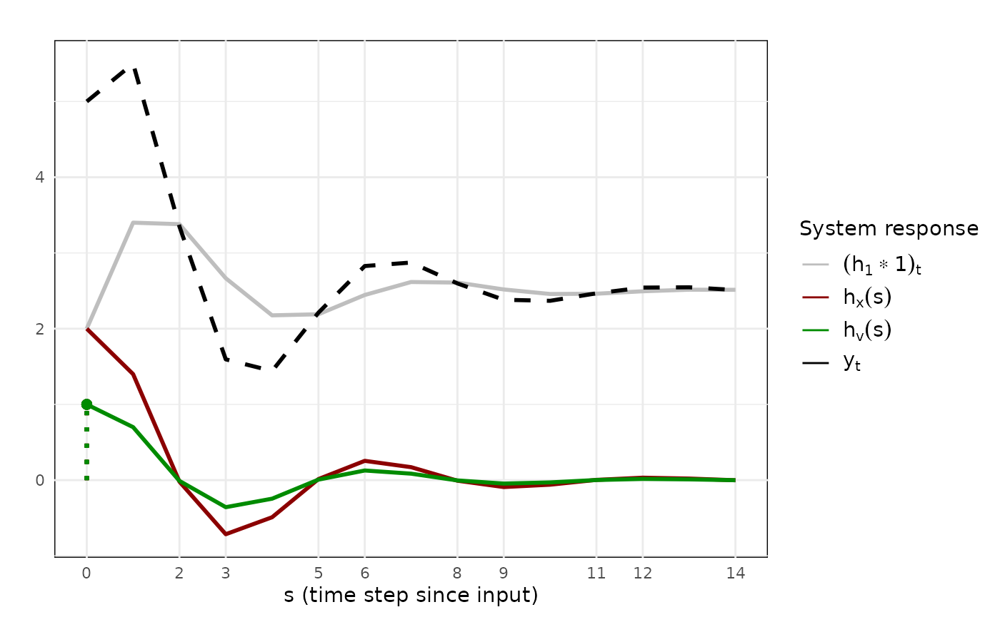
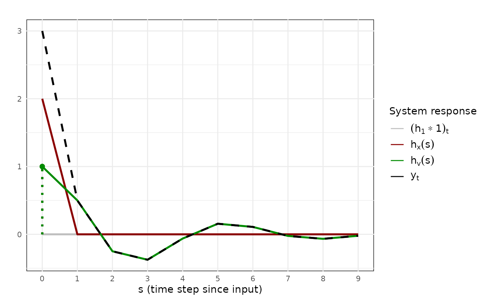

In this vignette, we discuss how the irf_generator
function can be used to generate the different types of system responses
discussed in the manuscript.
Arguments
irf_generator has two main sets of arguments. The first
set are the model parameters. The second set are the input vectors we
supply the system with. Different system responses will be returned
depending on which input vectors are supplied. The burnin
argument is discussed afterwards.
Parameters
The different types of system responses can be calculated by
supplying parameter values and input vectors to the
irf_generator function. We distinguish the autoregressive
(AR) parameters
from covariate parameters,
,
and the intercept parameter
.
Note that the values of the parameters can be hypothetical or estimated.
They are supplied using the following arguments:
-
intercept: A single numeric value that denotes the value of the intercept of the model; -
x_params: A numeric vector of length length containing the values of the covariate parameters . Importantly, is the number of free lagged covariate effects. The first element of the vector is taken to be the contemporaneous effect of the covariate, ; -
ar_params: A numeric vector of length containing the values of the AR parameters, .
Although one can supply arbitrary parameter values, certain restrictions on the values of the AR parameters are required for stability. Specifically, one may expect to see unstable (i.e., exploding) system responses when some of the roots of the lag polynomial are inside the complex unit circle. A warning will be returned if this is the case. We advise against using this package for the study of systems which are not stable, since stability is assumed in the derivations.
Input vectors
The values of the covariate, , and the values of the innovations, are supplied as vector arguments. The input vector for the intercept is a unit vector which is supplied automatically. Different system responses will be returned depending on which input vectors are supplied. To make this concrete, let us consider the following LCV model with two AR parameters:
Impulse response
Say we want to perturb the covariate by a unit, and trace the effect
of this perturbation over time. An impulse response will be returned if
a vector of the form
is supplied as input vector. To only retrieve this impulse response, we
set the intercept to 0 (or, equally, leave the intercept argument
unspecified), and all other input vectors to zero vectors. We call the
irf_generator function as follows:
data <- irf_generator(
x_params = 2,
ar_params = c(0.7, -0.5),
x = c(1, 0, 0, 0, 0, 0, 0, 0, 0)
)The output is a list containing the following entries:
-
intercept,ar_params,x_params: The values for the parameters of the model; -
irf: A data.frame containing the computed system responses.
The data.frame contains the results we are interested in, and itself contains the following columns:
-
time: The time index, starting at ; -
irf: The total response; -
irf_intercept: The cumulative response towards the unit vector; -
irf_x: The response towards the covariate, which in this case is of the form and therefore equal to the impulse response function (); -
irf_v: The response towards the innovations, which in this case is ; -
x: The covariate input vector; -
innovations: The innovation input vector.
data$irf## time irf irf_intercept irf_x irf_v x innovations
## 1 0 2.00000000 0 2.00000000 0 1 0
## 2 1 1.40000000 0 1.40000000 0 0 0
## 3 2 -0.02000000 0 -0.02000000 0 0 0
## 4 3 -0.71400000 0 -0.71400000 0 0 0
## 5 4 -0.48980000 0 -0.48980000 0 0 0
## 6 5 0.01414000 0 0.01414000 0 0 0
## 7 6 0.25479800 0 0.25479800 0 0 0
## 8 7 0.17128860 0 0.17128860 0 0 0
## 9 8 -0.00749698 0 -0.00749698 0 0 0If we had supplied any other vector than
,
the column irf_x would contain the appropriate system
response.
To visualize the impulse response
,
we can provide the irf_plot function with the data.frame of
system responses:
irf_plot(data$irf)![One sees a plot with three lines, namely a black dotted line that is overlayed on a red solid line, and a green horizontal line. These lines represent the system responses to a single impulse at time $t = 0$, represented by a red lollipop, where the black line represents the system's total response, the red line represents the system's response to the impulse from the covariate, and the green line represents the system's response to the impulse from the innovations. While the green line remains $0$ across time, the red line starts out high and decreases rapidly, overshooting the value $0$ only to increase again, showing a sawtooth pattern that converges to $0$.](irf_generator_files/figure-html/unnamed-chunk-4-1.png)
Visualization of an impulse response function for an LCV model with , and . A single unit impulse is given by the covariate at time .
We observe the impulse response towards the covariate,
in red. Note that the plotting function will automatically denote the
time index by
and use appropriate legends if the input vectors are of the form
(impulse responses). The plotting function will also automatically plot
the model-implied total response
as a black dotted line. In this case, since we did not present any
innovations, the total response is simply irf_x, so the
black dotted line and the red line overlap (this may be a bit hard to
see with the default colors).
The plotting function allows one to select which responses to visualize, and customize other features (see the vignette on Plotting).
Scaled impulse response
A scaled impulse response will be returned if a vector of the form is supplied as input vector, where is a scalar. A useful scalar can be a scalar indicating a standard, or typical deviation in the input variable. For example, if we know that , then it might be insightful to assess the system response towards a standard deviation increase in the innovations. We supply the function with this information by supplying the appropriate input vector:
data <- irf_generator(
x_params = 2,
ar_params = c(0.7, -0.5),
innovations = c(2, 0, 0, 0, 0, 0, 0, 0, 0, 0)
)The output is again a data frame with the same columns as before. The
scaled impulse response
is in the column irf_v, and now the column
innovations contains a
at
:
data$irf## time irf irf_intercept irf_x irf_v x innovations
## 1 0 2.00000000 0 0 2.00000000 0 2
## 2 1 1.40000000 0 0 1.40000000 0 0
## 3 2 -0.02000000 0 0 -0.02000000 0 0
## 4 3 -0.71400000 0 0 -0.71400000 0 0
## 5 4 -0.48980000 0 0 -0.48980000 0 0
## 6 5 0.01414000 0 0 0.01414000 0 0
## 7 6 0.25479800 0 0 0.25479800 0 0
## 8 7 0.17128860 0 0 0.17128860 0 0
## 9 8 -0.00749698 0 0 -0.00749698 0 0
## 10 9 -0.09089219 0 0 -0.09089219 0 0Applying the irf_plot function yields a visualization of
the scaled impulse response:
irf_plot(data$irf)![One again sees a plot with three lines, namely a black dotted line that is overlayed on a green solid line, and a red horizontal line. These lines again represent the system responses to a single impulse at time $t = 0$, represented by a green lollipop, where the black line represents the system's total response, the red line represents the system's response to the impulse from the covariate, and the green line represents the system's response to the impulse from the innovations. While the red line remains $0$ across time, the green line starts out high and decreases rapidly, overshooting the value $0$ only to increase again, showing a sawtooth pattern that converges to $0$.](irf_generator_files/figure-html/unnamed-chunk-7-1.png)
Visualization of a scaled impulse response function for an LCV model with , and . A single scaled impulse of size is given by the innovations at time .
We see that now an innovation of magnitude was supplied (green lollipop). The scaled impulse response is drawn as a green line. The legend denotes this response as , where signifies that the curve no longer represents the impulse response, but the response when supplied by a non-unit input variable. Throughout this documentation, red will typically be reserved for covariate related objects and green for innovation related objects (though this can be customized by the user).
Cumulative responses
A cumulative response will be returned if the input vector contains non-zero values for arguments beyond the first argument. Let us supply two consecutive unit innovations, followed by a number of values to show how the system relaxes:
data <- irf_generator(
x_params = 2,
ar_params = c(0.7, -0.5),
innovations = c(1, 1, 0, 0, 0, 0, 0, 0, 0, 0)
)The output has the same structure. The cumulative response towards
the innovations
is again given under the column irf_v. We see that the
column irf_v will always contain the system response
towards the innovations.
data$irf## time irf irf_intercept irf_x irf_v x innovations
## 1 0 1.00000000 0 0 1.00000000 0 1
## 2 1 1.70000000 0 0 1.70000000 0 1
## 3 2 0.69000000 0 0 0.69000000 0 0
## 4 3 -0.36700000 0 0 -0.36700000 0 0
## 5 4 -0.60190000 0 0 -0.60190000 0 0
## 6 5 -0.23783000 0 0 -0.23783000 0 0
## 7 6 0.13446900 0 0 0.13446900 0 0
## 8 7 0.21304330 0 0 0.21304330 0 0
## 9 8 0.08189581 0 0 0.08189581 0 0
## 10 9 -0.04919458 0 0 -0.04919458 0 0Applying the irf_plot function yields a trajectory
plot:
irf_plot(data$irf)
Visualization of a cumulative response function for an LCV model with , and . Two unit impulses are given by the innovations at times and .
We see that the time index has changed to , and the legend denotes the cumulative response towards the innovations by .
Total response
As an example of a total response, we will supply a unit covariate
input and a unit innovation at the same time. We supply the
irf_generator function with both input vectors and
visualize the trajectory:
data <- irf_generator(
x_params = 2,
ar_params = c(0.7, -0.5),
x = c(1, 0, 0, 0, 0, 0, 0, 0, 0, 0),
innovations = c(1, 0, 0, 0, 0, 0, 0, 0, 0, 0)
)
irf_plot(data$irf)
Visualization of the total response as the sum of the covariate and innovation responses functions for an LCV model with , and . Two unit impulses are given at time ; One through the covariate and one through the innovations.
Intercept parameters
To include an intercept parameter in the visualization of system
responses, one can supply the intercept parameter value to the
irf_generator function:
data <- irf_generator(
intercept = 2,
x_params = 2,
ar_params = c(0.7, -0.5),
x = c(1, 0, 0, 0, 0, 0, 0, 0, 0, 0),
innovations = c(1, 0, 0, 0, 0, 0, 0, 0, 0, 0)
)
irf_plot(data$irf)
Visualization of the effect of the intercept on the total response. An LCV model was used with , , and . As in the previous figure, two unit impulses are given at time ; One through the covariate and one through the innovations.
By default, the irf_generator will ‘burn in’ the part of
the system response due to the intercept parameter analytically, in
effect fixing it to its model-implied time limit. This allows one to
interpret the other system responses relative to the hypothetical
equilibrium state of the system.
However, one can override this default behavior by setting the
argument burnin = FALSE:
data <- irf_generator(
intercept = 2,
x_params = 2,
ar_params = c(0.7, -0.5),
x = c(1, 0, 0, 0, 0, 0, 0, 0, 0, 0, 0, 0, 0, 0, 0),
innovations = c(1, 0, 0, 0, 0, 0, 0, 0, 0, 0, 0, 0, 0, 0, 0),
burnin = FALSE
)
irf_plot(data$irf)
Visualization of the effect of the intercept on the total response
when burnin = FALSE, that is when the system is not in
equilibrium. As one can see, the impulses provided through the intercept
show a sawtooth pattern, showing behavior that is dependent on the
initial value.
By setting the argument burnin = FALSE, the behavior of
the system is dependent on its initial value while the system approaches
its equilibrium state.
General dynamic regression models
In the manuscript we focused on lag-1 dynamic regression models for
accessibility. Here, we provide some examples of how dynamic regression
models with more general lag structures can be investigated using the
irf_generator function. The following table shows how
different parameter settings can be supplied to the
irf_generator function, together with the associated
model:
| Abbreviation | intercept |
ar_params |
x_params |
Model |
|---|---|---|---|---|
| LR | 0 |
0 |
1 |
|
| AR(1) | 1 |
0.7 |
0 |
|
| LCV(1) | 0 |
0.7 |
1 |
|
| CF(2) | 0 |
c(0.5, -0.5) |
c(2, -1, 1) |
|
| ADL(2, 2) | 3 |
c(0.7, 0.2) |
c(2, 0.5, 1) |
Parentheses indicate the number of AR parameters and lagged covariate parameters . For example, the ADL(2,2) allows for p = 2 AR parameters ( and ) and for q = 2 lagged covariate parameters (). Note that the CF model only has a single value in parenthesis, because p must equal q for the CF restrictions to hold. The CF restrictions are satisfied if for all j in (see Appendix A2 in Ariens et al., submitted). Similarly, the LCV model only has a single value in parenthesis, because the order of a LCV model is determined by the number of free AR parameters, that is by . Indeed, for the LCV model all lagged covariate parameters are fixed to 0. We could refer to a LCV model as an ADL(p, 0) model. Finally, the LR model never requires parentheses, because all lagged parameters are fixed to 0.
To illustrate how the irf_generator function can be used
to investigate models with more general lag structures, let us visualize
the impulse responses of the CF(2) model in the above table. We know
from the manuscript that for any CF model, the effect of the covariate
will be purely contemporaneous. We can verify that this is the case for
our CF(2) model by calculating the impulse response functions:
data <- irf_generator(
intercept = 0,
x_params = c(2, -1, 1),
ar_params = c(0.5, -0.5),
x = c(1, 0, 0, 0, 0, 0, 0, 0, 0, 0),
innovations = c(1, 0, 0, 0, 0, 0, 0, 0, 0, 0)
)We call the irf_plot function:
irf_plot(data$irf)
Visualization of the impulse response function of a CV model with , , and . As one can see, the covariate impulse dies out immediately while the innovation impulse persists across time.
Indeed, the impulse response decays immediately following a perturbation.